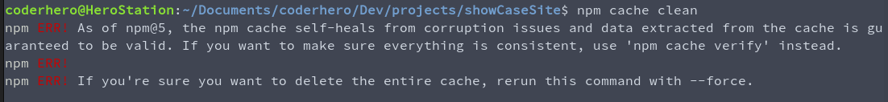
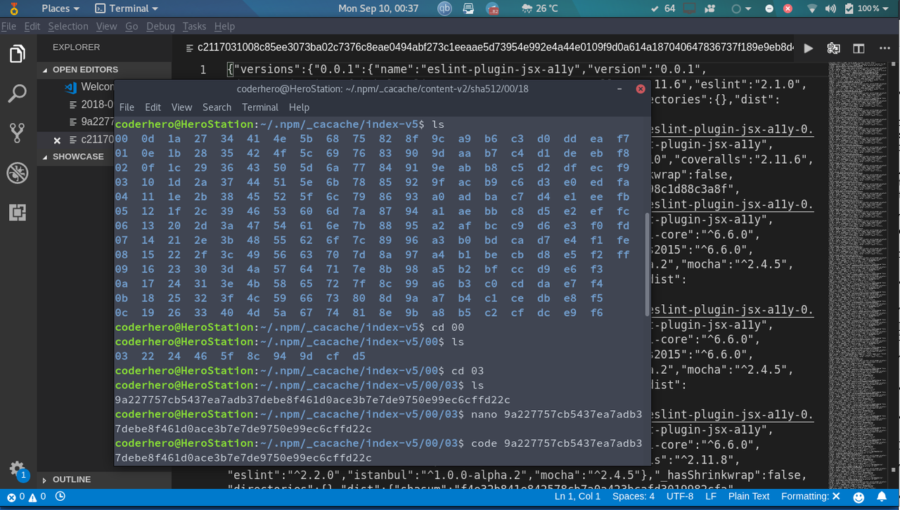
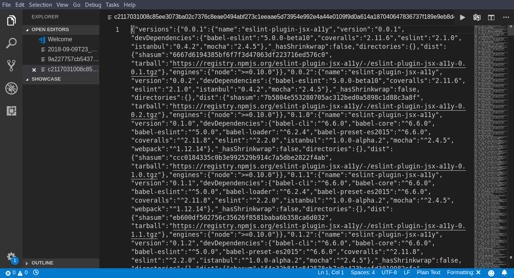

NPM Install Error:Unexpected end of JSON input while parsing near '...nt-webpack-plugin":"0'
When creating a new Angular 5 project:
node version: 8.9.2
npm version: 5.5.1
My Command is:
npm install -g @angular/cli
The Error is:
npm ERR! **Unexpected end of JSON input while parsing near '...nt-webpack-plugin":"0'** npm ERR! A complete log of this run can be found in: npm ERR! C:\Users\Aashitec\AppData\Roaming\npm-cache\_logs\2017-12-06T13_10_10_729Z-debug.log
The error log is here
Answer
This solved it for me:
Open Windows Powershell as admin
npm cache clean --force npm install -g @angular/cli
https://devblogs.microsoft.com/premier-developer/getting-started-with-node-js- angular-and-visual-studio-code/
Suggest
Solution:
npm cache clean --force
then try again to create your app (here when creating a react app) or install what you were about to install.
create-react-app myproject
(creating react app)[same npm problem that can occur in different operation]
npm install -g @angular/cli@latest
(installing angular cli (or installing anything else))
It will work.
explanation:
That's a problem related to npm, it's about the cache that get corrupt. Even though in newer versions of npm they implemented self healing, which normally guarantee no corruption, but it seem it's not that efficient.  Forcing clean cache resolve the problem.
The error happen when parsing one of the cache files, which have a json
format. The cache is found at ~/.npm/_cacache (in linux) and %AppData%/npm-
cache (windows). For my current npm version and when i checked, there was
three directories.
if you check the first or the second, the structure is as follow 
And each cache file have a json format (and that what get parsed) 
Here a good link from the doc: https://docs.npmjs.com/cli/cache
[Update] Also if it happen that this didn't solve it, you may check this answer here https://stackoverflow.com/a/50191315/7668448 it show how you can change the npm registry, that can be helpful. Check and see.